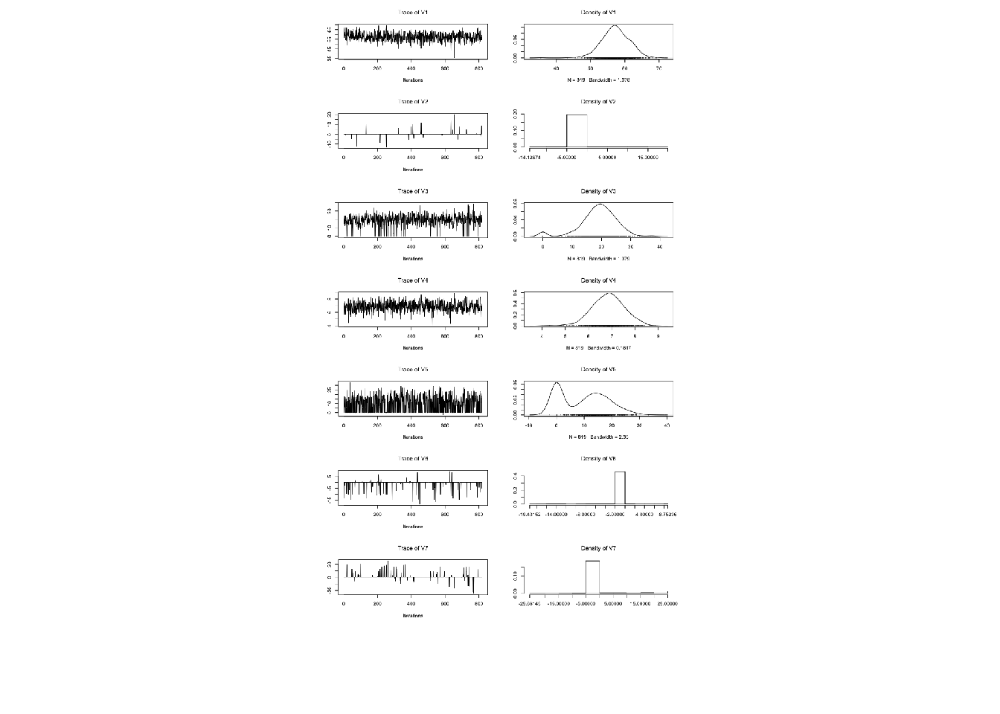
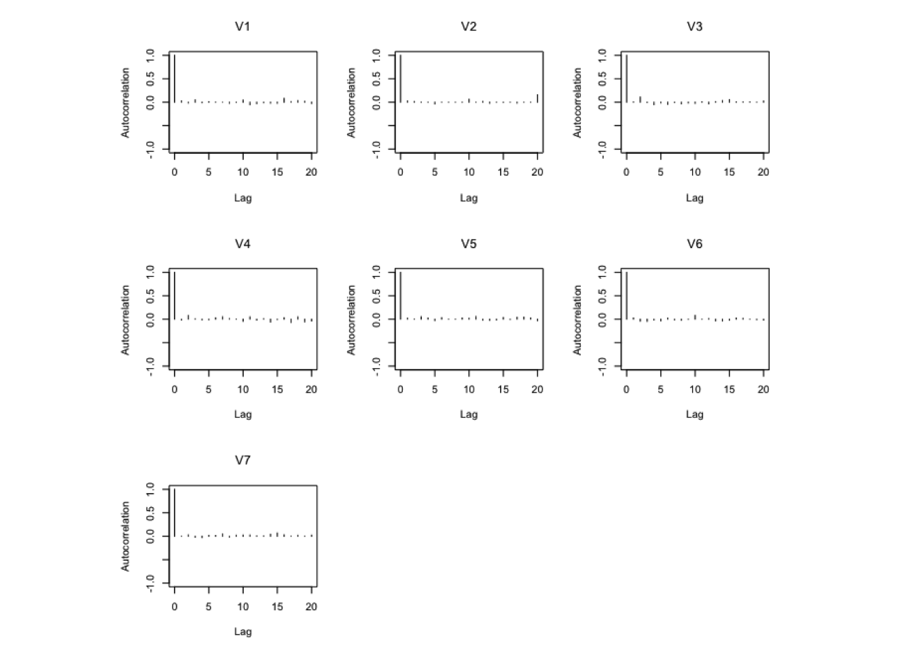
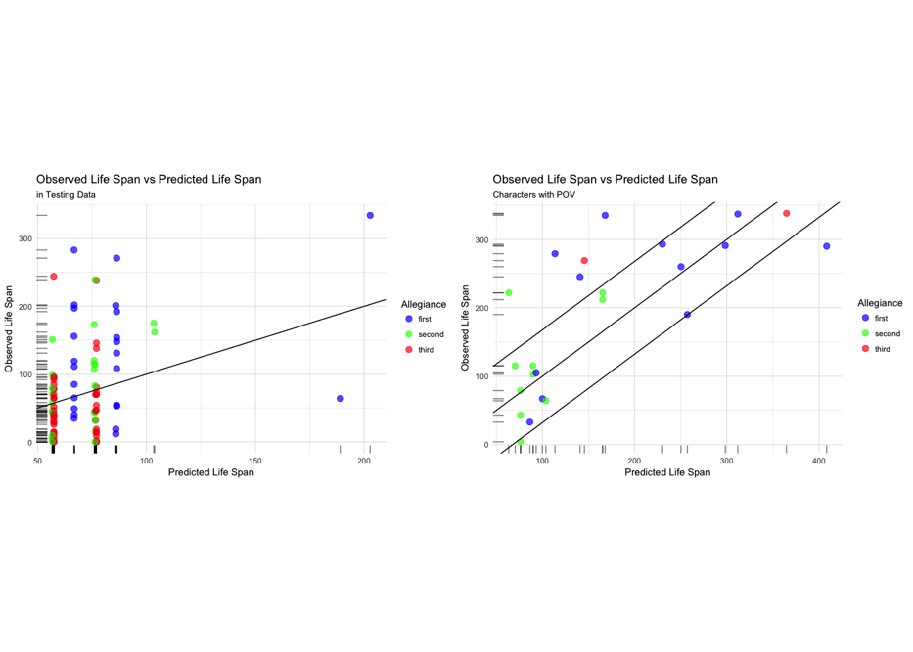
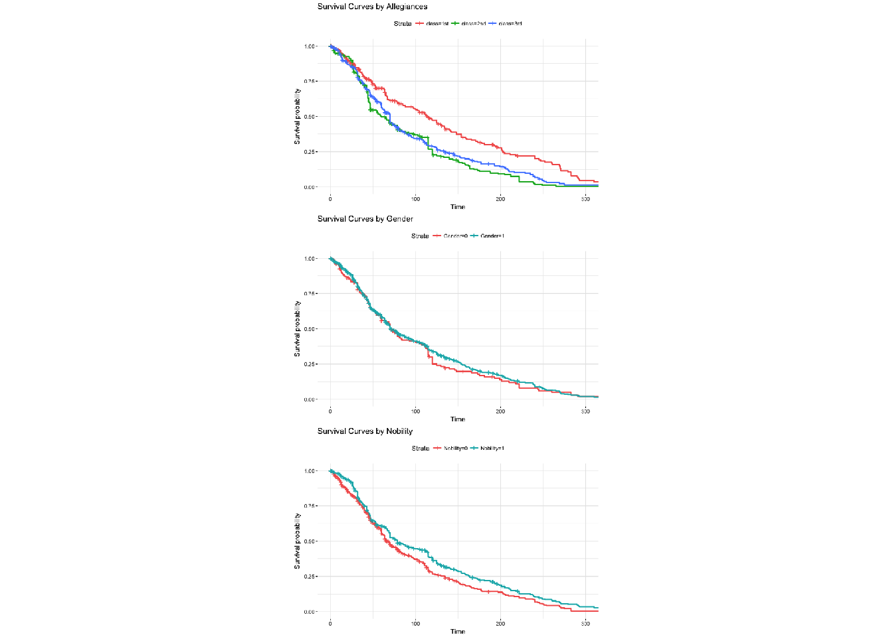
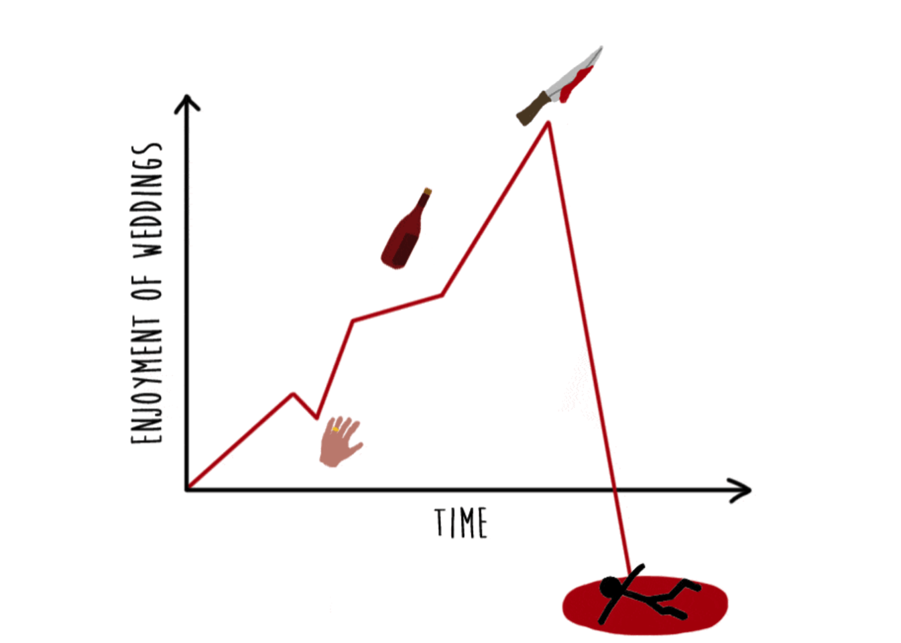

“A Bayesian approach to explore the life spans of characters in A Song of Ice and Fire.”
The TV series Game of Thrones has been a great success since released. The adaptation is based on the fantasy novel A Song of Ice and Fire, written by George R. R. Martin. As we know, one of the reasons people love to read such a story is its magnificent view, not only chronically, but geologically as well. Consequently, thousands of characters emerged on the continent of Westeros. Due to the fame of killing his own characters in story, Mr. Martin leaves one of the most popular and long-lasting question in fan community: who will be killed next?
Awoiaf Wiki (Felipe Bini, Scafloc, Rhaenys Targaryen et al. 2017) is a fan-made community website which provides detailed information related to the novel. A complete list of characters appeared in the story so far is scraped from this site and uploaded to Kaggle (Myles O’Neill 2016). Our goal is to explore the data set and try to find how long these characters can live “on stage” and what factors have influences on the life span.
The dataset from the file character-death.csv contains 917 entries and 13 attributes. We do the following steps to clean the raw data:
Allegiances, typically remove the prefix “House”, so that there are only 12 political factions left.NA as Book.Intro.Chapter.Book.of.Death, Death.Chapter, Book.Intro.Chapter, appearances in GoT, CoK, SoS, FfC, DwD (five books respectively), plus the numbers of chapters of each book to calculate an overall “lifetime” of a character. Specifically, for some characters with a Book.of.Death but no Death.Chapter, we assume the his/her living chapter numbers is the half of the chapter number of that book.POV to each character based on the number of Point of View (POV) chapters (Kirt, Nittanian, Rhaenys Targaryen et al. 2017).Allegiances by clustering all 12 factions into 3 major groups, we call them first, second and third respectively. The first allegiance group contains Lannister, Stark and Targaryen. The second allegiance group contains Arryn, Baratheon, Greyjoy, Martell, Tully and Tyrell. The third allegiance group contains some lower class factions such as Night’s Watch, Wildling and people with no allegiance (None).Gender and Nobility.Note that we choose to constrain the number of interaction terms as predictor variables based on two major reasons: one is that most of interactions are not interpretable, the other is because of principle of parsimony that we believe a simple model would be enough in this case. We will further discuss the inclusion of interaction terms later.
So far, the remaining data is stored as a data frame with 899 characters and 11 variables. The complete list of variables are listed below:
Name: String. The name (and nickname) of the character.Life: Numeric (continuous). The calculated length of life in the book.Gender: Numeric (binary). 1 if the character is male, 0 if the character is female.Nobility: Numeric (binary). 1 if the character is a nobleman, 0 if the character is a commoner.POV: Numeric (continuous). The number of POV chapters of the character.Allegiances: String (factor). The political faction that character is loyal to.Status: Numeric (binary). 1 if the character is alive, 0 if the character is perished.first: Numeric (binary). Includes the “Big 3” major houses in the novel, which are House Lannister, House Stark and House Targaryen.second: Numeric (binary). Includes some other houses appeared in the novel, which do not have so many main characters. One of the similaries among these houses is that they are not contenders of the Iron Throne in the later game.third: Numeric (binary). Includes three factions that are technically not “houses”: Night’s Watch, Wildling and None.GxN: Numeric (binary). Interaction between Gender and Nobility.In the following paragraphs, we use \(y_i\) to denote the life span of the \(i\)-th character in our data frame, and \(\mathbf{X}_i\) as the vector of all predictor variables except thrid (so we keep Gender, Nobility, POV, first, second and GxN). Next, we divide the data into one training set \((\mathbf{y},\mathbf{X})\) and one testing set \((\mathbf{y}_\text{test},\mathbf{X}_\text{test})\). The former contains 800 entries while the latter contains 99. For model selection procedure, we use Bayesian method, where we separate the usual coefficient in linear regression into two parts \(\beta_j=z_j\times b_j\) where \(z_j\in\{0,1\}\),\(b_j\in\mathbf{R}\), such that
\[\begin{split} y_i&=z_1b_1x_{i,1}+z_2b_2x_{i,2}+\cdots+z_{8}b_{8}x_{i,8}+\epsilon\\ x_{i,1} &= 1 \text{ for each subject } i\\ x_{i,2} &= 1\text{ if subject $i$ is male, 0 otherwise}\\ x_{i,3} &= 1\text{ if subject $i$ is nobleman, 0 otherwise}\\ x_{i,4} &= \text{number of POVs that subject $i$ has in the novel}\\ x_{i,5} &= 1\text{ if subject $i$ is in the first group of allegiances, 0 otherwise}\\ x_{i,6} &= 1\text{ if subject $i$ is in the second group of allegiances, 0 otherwise}\\ x_{i,7} &= x_{i,2}\times x_{i,3}\\ \end{split}\]
In our case, we consider the following combinations of \(\mathbf{z}\)’s:
\[\begin{split} y_i&=b_1\\ y_i&=b_1+b_2x_2\\ y_i&=b_1+b_3x_3\\ y_i&=b_1+b_4\times\text{POV}\\ y_i&=b_1+b_5x_5+b_6x_6\\ y_i&=b_1+b_2x_2+b_3x_3\\ y_i&=b_1+b_2x_2+b_3x_3+b_7x_7\\ y_i&=b_1+b_2x_2+b_4\times\text{POV}\\ \end{split}\]
\[\begin{split} y_i&=b_1+b_2x_2+b_5x_5+b_6x_6\\ y_i&=b_1+b_3x_3+b_4\times\text{POV}\\ y_i&=b_1+b_3x_3+b_5x_5+b_6x_6\\ y_i&=b_1+b_4\times\text{POV}+b_5x_5+b_6x_6\\ y_i&=b_1+b_2x_2+b_3x_3+b_4\times\text{POV}+b_7x_7\\ y_i&=b_1+b_2x_2+b_3x_3+b_5x_5+b_6x_6+b_7x_7\\ y_i&=b_1+b_2x_2+b_4\text{POV}+b_5x_5+b_6x_6\\ y_i&=b_1+b_3x_3+b_4\text{POV}+b_5x_5+b_6x_6\\ y_i&=b_1+b_2x_2+b_3x_3+b_4\text{POV}+b_5x_5+b_6x_6+b_7x_7\\ \end{split}\]
The Bayesian model selection proceeds by obtaining a posterior distribution for \(\mathbf{z}\), which can be achieved by computing posterior odds for different models (Hoff 2009, p. 164):
\[\text{odds}(\mathbf{z}_a,\mathbf{z}_b\mid\mathbf{y},\mathbf{X})=\frac{p(\mathbf{z}_a\mid\mathbf{y},\mathbf{X})}{p(\mathbf{z}_b\mid\mathbf{y},\mathbf{X})}=\frac{p(\mathbf{z}_a)}{p(\mathbf{z}_b)}\times\frac{p(\mathbf{y}\mid\mathbf{X},\mathbf{z}_a)}{p(\mathbf{y}\mid\mathbf{X},\mathbf{z}_b)}\]
So now we need to specify the marginal \(p(\mathbf{y}\mid\mathbf{X},\mathbf{z})\) of each combination of \(\mathbf{z}\). Assume \(\mathbf{\beta}\) follows a \(g\)-prior distribution. Given \(\mathbf{z}\) and \(p_z\) non-zero entries, \(\mathbf{X}_z\) is the \(n\times p_z\) matrix corresponding to the variable \(j\) where \(z_j=1\), and \(\mathbf{\beta}_z\) is \(p\times 1\) vector consiting of the entries of \(\mathbf{\beta}\) where \(z_j=1\). Then \(\{\mathbf{\beta}_z\mid\mathbf{X}_z\}\sim MVN\{\mathbf{0},g\sigma^2[\mathbf{X}_z^T\mathbf{X}_z]^{-1}\}\), and \(\sigma^2\) follows a \(Inverse-Gamma(\nu_0/2,\nu_0\sigma^2_0/2)\). After a rather tedious process of mathematical deduction (Hoff 2009, p. 165), the marginal probability is:
\[\begin{split}p(\mathbf{y}\mid\mathbf{X},\mathbf{z})&=\pi^{-n/2}\frac{\Gamma([\nu_0+n]/2)}{\Gamma(\nu_0/2)}(1+g)^{-p_{\mathbf{z}}/2}\frac{(\nu_0\sigma_0^2)^{\nu_0/2}}{(\nu_0\sigma_0^2+\text{SSR}^z_g)^{(\nu_0+n)/2}},\\ \text{where }&\text{SSR}^z_g=\mathbf{y}^T(\mathbf{I}-\frac{g}{g+1}\mathbf{X}_z(\mathbf{X}_z^T\mathbf{X}_z)^{-1}\mathbf{X}_z)\mathbf{y}.\end{split}\]
Now we suppose again \(g=n\) and prior \(p(\sigma^2)\) is unit informative for every model \(\mathbf{z}\), so \(\nu_0=1, \forall\mathbf{z}\), but \(\sigma_0^2\) is estimated residual variance which differs case by case, such that the posterior odds can be written as:
\[\frac{p(\mathbf{y}\mid\mathbf{X},\mathbf{z}_a)}{p(\mathbf{y}\mid\mathbf{X},\mathbf{z}_b)}=(1+n)^{(p_{\mathbf{z}_a}-p_{\mathbf{z}_b})/2}\left(\frac{s^2_{\mathbf{z}_a}}{s^2_{\mathbf{z}_b}}\right)^{0.5}\left(\frac{s^2_{\mathbf{z}_b}+\text{SSR}^{\mathbf{z}_b}_g}{s^2_{\mathbf{z}_a}+\text{SSR}^{\mathbf{z}_a}_g}\right)^{(n+1)/2}\]
A predefined function lpy.X() from Professor Peter D. Hoff’s course material (Hoff 2009) calculates the value of \(\log p(\mathbf{y}\mid\mathbf{X},\mathbf{z})\). Since
\[p(\mathbf{z}\mid\mathbf{y},\mathbf{X})\propto p(\mathbf{z})p(\mathbf{y\mid\mathbf{X},\mathbf{z})}\propto p(\mathbf{y}\mid\mathbf{X},\mathbf{z}),\]
we can derive the corresponding probability of each model \(p(\mathbf{z}_j\mid\mathbf{y},\mathbf{X})\):
\[\begin{split}p(\mathbf{z}_j\mid\mathbf{y},\mathbf{X})&=\frac{\exp(\log p(\mathbf{y}\mid\mathbf{X},\mathbf{z}_j))}{\sum^n_{i=1}\exp(\log p(\mathbf{y}\mid\mathbf{X},\mathbf{z}_i))}\\ \end{split}\]
In order to prevent singularity, we perform a little trick on both denominator and numerator, that is to divide them by the mean of all models’ log-likelihood:
\[\begin{split}p(\mathbf{z}_j\mid\mathbf{y},\mathbf{X})&=\frac{\exp(\log p(\mathbf{y}\mid\mathbf{X},\mathbf{z}_j))/\exp(\frac1{n}\sum^n_{i=1}(\log p(\mathbf{y}\mid\mathbf{X},\mathbf{z}_j)))}{\sum^n_{i=1}\exp(\log p(\mathbf{y}\mid\mathbf{X},\mathbf{z}_i))/\exp(\frac1{n}\sum^n_{i=1}(\log p(\mathbf{y}\mid\mathbf{X},\mathbf{z}_j)))}\\ &=\frac{\exp\left(\log p(\mathbf{y}\mid\mathbf{X},\mathbf{z}_j)-\frac1{n}\sum^n_{i=1}(\log p(\mathbf{y}\mid\mathbf{X},\mathbf{z}_j))\right)}{\sum^n_{i=1}\exp\left(\log p(\mathbf{y}\mid\mathbf{X},\mathbf{z}_i)-\frac1{n}\sum^n_{i=1}(\log p(\mathbf{y}\mid\mathbf{X},\mathbf{z}_j))\right)}\\\end{split}\]
The detailed table of marginal probabilities of our candidate models are shown below:
model MargProb
1 (1,0,0,0,0,0,0) 0.0000
2 (1,1,0,0,0,0,0) 0.0000
3 (1,0,1,0,0,0,0) 0.0000
4 (1,0,0,1,0,0,0) 0.0013
5 (1,0,0,0,1,1,0) 0.0000
6 (1,1,1,0,0,0,0) 0.0000
7 (1,1,1,0,0,0,1) 0.0000
8 (1,1,0,1,0,0,0) 0.0000
9 (1,1,0,0,1,1,0) 0.0000
10 (1,0,1,1,0,0,0) 0.9194
11 (1,0,1,0,1,1,0) 0.0000
12 (1,0,0,1,1,1,0) 0.0007
13 (1,1,1,1,0,0,1) 0.0019
14 (1,1,1,0,1,1,1) 0.0000
15 (1,1,0,1,1,1,0) 0.0000
16 (1,0,1,1,1,1,0) 0.0765
17 (1,1,1,1,1,1,1) 0.0002It looks like model 10 containing Nobility and POV, has overwhelmingly large marginal probability comparing with other candidates. But this does not guarantee that model 10 is the perfect one. In fact, the confidence intervals of intercept, coefficients of predictors Nobility, POV, first do not contain zeros. In the early stage of listing possible candidates, we bundled both allegiance variables first, second together, so it omitted the combination of intercept+Nobility+POV+first automatically.
est 2.5% 97.5%
int 50.292912 33.911572 66.302044
G 7.968891 -7.830800 24.821406
N 29.325912 7.676253 51.498019
P 6.699714 5.260619 8.078382
first 13.018643 1.787524 24.323894
second -3.607900 -15.342952 7.627577
G:N -11.223858 -36.263750 10.681185The 17 candidate models listed in the previous section simply cannot cover all the possible combinations of \(\mathbf{z}\)’s. In fact, if we include more higher order interactions, the calculation would take tremendously more time. By subjectively selecting some candidates (like what we did), and applying a Gibbs sampler to iteratively sample \(z_j\) from its full conditional distribution, then a \(z_j\) is generated from \(p(z_j\mid\mathbf{y},\mathbf{X},\mathbf{z}_{-j})\) if we start from \(\mathbf{z}=(z_1,\cdots,z_8)\). Note that we assumed uninformative prior before, so \(p(z_j=0)=p(z_j=1)=\frac12\).
\[\begin{split} p(z_j\mid\mathbf{y},\mathbf{X},\mathbf{z}_{-j})&=\frac{p(z_j=1\mid\mathbf{y},\mathbf{X},\mathbf{z}_{-j})}{p(z_j=1\mid\mathbf{y},\mathbf{X},\mathbf{z}_{-j})+p(z_j=0\mid\mathbf{y},\mathbf{X},\mathbf{z}_{-j})}\\ &=\frac{1}{1+\frac{p(z_j=0\mid\mathbf{y},\mathbf{X},\mathbf{z}_{-j})}{p(z_j=1\mid\mathbf{y},\mathbf{X},\mathbf{z}_{-j})}}\\ &=\frac{1}{1+\frac{p(z_j=0)}{p(z_j=1)}\cdot\frac{p(\mathbf{y}\mid\mathbf{X},\mathbf{z}_{-j},z_j=0)}{p(\mathbf{y}\mid\mathbf{X},\mathbf{z}_{-j},z_j=1)}}\\ &=\frac{1}{1+\frac{p(\mathbf{y}\mid\mathbf{X},\mathbf{z}_{-j},z_j=0)}{p(\mathbf{y}\mid\mathbf{X},\mathbf{z}_{-j},z_j=1)}}\\ \end{split}\]
The algorithm for one iteration of the Gibbs sampler is shown below:
lm.gprior() (Hoff 2009).)For the MCMC algorithm, we set the burn-in period to be 1000 and the thinning factor to be 10. Additionally, the initial value of \(\mathbf{z}=(1,1,1,1,1,1,1,1)\).
After Gibbs sampling, the updated coefficients of predictors generally agree with previous results. Specifically, for \(\beta_j\) where \(p(\beta_j\not=0\mid\mathbf{y})>0.5\), the corresponding posterior confidence interval does not contain zero. In other words, we still keep Nobility, POV and first as our predictors in the model.
pr(beta!=0) est 2.5% 97.5%
int 1.0000 57.38566554 49.507418 65.008466
G 0.0377 0.06087173 0.000000 0.000000
N 0.9674 19.23460797 0.000000 29.589302
P 1.0000 6.85320366 5.431207 8.251596
first 0.6277 9.29707540 0.000000 24.181711
second 0.0851 -0.65298355 -11.286389 0.000000
G:N 0.0654 0.33171054 0.000000 10.672953The traceplot1 of \(\beta_1,\cdots,\beta_8\) shows that the Gibbs sampled values are generally stable in trend. For intercept, Nobility, POV, first whose effects are significant, the sampled values are fluctuating around their estimated values. While Gender, second and the only interaction term Gender:Nobility stay as zero for most of the time.

The autocorrelation functions of \(\beta\)’s are also satisfying, indicating that MCMC converges and the effective sample sizes are all greater than \(1000\).
[1] 9631.787 10000.000 6748.320 10000.000 8933.820 9401.725 6174.081
So far, we can confirm the legitimacy of our model via Gibbs sampling and model averaging. Then the task remained is to see whether our model is suitable for predicting some other characters’ destinies.
Recall that the raw data was divided into training and testing set selected randomly. All of our previous model selection was carried out based on training data, so the untouched testing data is a perfect collection to perform prediction testing.
\[\text{life}=57.38566554+19.23460797\times\text{Nobility}+6.85320366\times\text{POV}+9.29707540\times\text{first}\]
We plug in the predictor values into testing data, calculate the predicted life span of each character, and draw the observation versus prediction scatter plot.

Based on the scatter plot, we find that the predicted life spans are aggregating at some values. In other words, our predictions form a discrete instead of a continuous distribution. This is not surprising as most of our predictor variables included in this model (or even among all the model candidates) are binary. Moreover, the greatest feature of the sole continuous variable POV is that only some main characters have the privilege to have their own POV chapters. Thus it leads to a situation where most of our 899 characters have a POV with value 0, and the rest of model-related variables are binary, namely either 0 or 1. As a result, the combinations of limited number of binary response is very limited. And this is why we have “stripe-shape” predictions.
However, the plot actually tells us something in the end. We notice that most of characters within the third allegiance group have relatively short life spans, and our predictions are acceptable down in bottom left corner. Our predictive model is likely to underestimate some long-life-span characters. The fact is, those characters are usually characters with large POV counts. To investigate our prediction performance over characters with non-zero POV counts, we draw another scatter plot on the right hand side. This plot includes characters from both training and testing data.
The predictions are generally more accurate than those in previous plot. Admittedly, there are some severe underestimations for some characters. Nevertheless, we set a loose standard that if the difference between predicted and observed values are within the averaged number of chapters of a book, then we claim the prediction is correct. In this way, most of our predictions are correct, in the sense of that character lives one book less or more than our prediction.
From the beginning, we keep discussing the life span of a character as how long they have been on stage since their first introduction. But looking at it from another perspective, we can measure how long they can live by continuously presenting the survival probability as the time proceeds. And we can fulfill such investigation through a Kaplan-Meier survival analysis (Kaplan–Meier estimator 2017). We utlize the function ggsurvplot() in the R package survminer to visualize different survival curves by allegiance group, gender and nobility.

The survival curves unearth some interesting facts:
Allegiance has influence on survival. To be specific, the first allegiance group, namely the “Big 3” houses tend to have higher survival chance comparing with the other two. Moreover, the second and the third group seem to have no distinct difference. These findings are consistent with our selected model in section 2, which reflects the significance of first while leaving second insignificant. At last, the story of A Song of Ice and Fire is a story of large families fighting for the Iron Throne. It makes sense that people from these families have more exposure time than others.Gender does not matter. It is like 2nd and 3rd allegiance groups in the first survival curve plot. Even though they are slightly different when time increases, that variation could be caused by lack of samples with large survival time. When time value is small, two curves are entwined.Nobility affects survival probability as well. As we can see, the curve representing noblemen stays above the one representing commoners all the time. In reality, the clashes and wars indeed cause enormous casualties and losses to common people. While for people from the higher class, they might be the ones who start the war, but they are definitely not the greatest victims of the war.\[\text{life}=57.38566554+19.23460797\times\text{Nobility}+6.85320366\times\text{POV}+9.29707540\times\text{first}\]
Let us reconsider the model we picked previously. It indicates that an average character in A Song of Ice and Fire automatically has a mean life span of 57 chapters, which is less than the mean chapter numbers of a book (67.8). Furthermore, certain factors have postive effects on the life span:
Among all predictor variables, POV explains a great amount of variance, mainly because characters with POV chapters usually have longer life spans. But as we addressed in previous section, POV is our only continuous predictor variable and most of characters don’t have a POV. This results in discrete-looking predictions. Therefore, a plausible next step we should take is to include more features in our model so that different characters can be more unique and identified consequently. Students from Technical University of Munich collected a more detailed data set which includes some extra features like age, marital status, survival status of family members, etc (A Song of Ice and Data 2016).
What’s more, more candidate models should be considered if more computing power and time are granted, so that we are able to explore more into some interaction terms between main effects, although we are highly suspicious about the significance of these interactions.
One thing we need to reconsider is the definition of “life span” in our model. We consider the life span as the duration that character is on stage and the “hibernating time” of a character is excluded. For example, a character may appear in Book 1, 2, 3 but not 4, then appears in Book 5. By our definition, the life span should subtract all chapters in Book 4. We do this tweak based on the facts some characters leave the stage, and we are not sure if they are still alive. So it makes us even harder to determine “how long they live”. However, this definition is not as rigorous as the natural life span. The drawback of our definition could be problematic when the story is not written chronologically. For instance, a chapter could contain stories happened in days, weeks or even months, hence the real duration of a chapter varies. One possible solution is including detailed time-related information about a character, like year of birth, year of death, but this requires more advanced web scraping techniques.
Another compromise we made is that the allegiance status of a character stays static. In our model, due to the limited information from original data, we are only aware of initial allegiances of characters. In fact, betrayal is not rare in a troubled times so that the allegiance status should be dynamic instead. Furthermore, the allegiance clustering is manually selected in order to control the number of variables in the model. It has advantage in simplifying calculation, but it might just ignore some information within designed allegiance groups. One might wonder, what is the difference between House Targaryen and House Stark? For this type of question, we are unable to answer. Further investigations might be required to explore the relationship between survival and characters’ detailed allegiance history.
In addition, the fates of living characters are still undetermined. It is impossible for us to know if Jon Snow could survive the next book. Our prediction mainly answers the question “what has made them survive so far” but not “how long they can live in this chaotic world”. This might sound like a bummer, but surely it leaves us some space to improve our model.
set.seed(7016)
library(ggplot2)
library(ggfortify)
library(coda)
library(fitR)
library(survival)
library(survminer)
library(ggthemes)
source("regression_gprior.r")
# -------------------DATA PREP---------------------
death <- read.csv("character-deaths.csv",header=T)
death$Allegiances <- sub("House ","",death$Allegiances)
unique(death$Allegiances)
death <- death[!is.na(death$Book.Intro.Chapter),] # now we have 905 characters left
# add a Book.of.Intro variable
death$Book.of.Intro = 0
X1 = which(death$GoT == 1)
X2 = which(death$CoK == 1 & death$GoT == 0)
X3 = which(death$SoS== 1 & death$CoK == 0 & death$GoT == 0)
X4 = which(death$FfC ==1 & death$SoS == 0 & death$CoK == 0 & death$GoT == 0)
X5 = which(death$DwD == 1 & death$FfC == 0 & death$SoS == 0 & death$CoK == 0
& death$GoT == 0)
death$Book.of.Intro[X1] = 1
death$Book.of.Intro[X2] = 2
death$Book.of.Intro[X3] = 3
death$Book.of.Intro[X4] = 4
death$Book.of.Intro[X5] = 5
# # same book death
# same.book.death <- which(death$Book.of.Intro==death$Book.of.Death)
# sbd1 = sum(death$Book.of.Intro[same.book.death]==1)
# sbd2 = sum(death$Book.of.Intro[same.book.death]==2)
# sbd3 = sum(death$Book.of.Intro[same.book.death]==3)
# sbd4 = sum(death$Book.of.Intro[same.book.death]==4)
# sbd5 = sum(death$Book.of.Intro[same.book.death]==5)
# summary(c(sbd1,sbd2,sbd3,sbd4,sbd5))
# # Min. 1st Qu. Median Mean 3rd Qu. Max.
# # 9.0 26.0 48.0 37.8 53.0 53.0
# life span of a character
bookch <- c(73-1,70-1,82-1,46-1,73-1) # minus appendix of each book
max.life <- sum(bookch) # 339
death$Life <- death$GoT*bookch[1]+death$CoK*bookch[2]+
death$SoS*bookch[3]+death$FfC*bookch[4]+death$DwD*bookch[5]
# subtract chapters in the intro book but before introduction
for (i in c(X1,X2,X3,X4,X5)) {
death$Life[i] <- death$Life[i]-death$Book.Intro.Chapter[i]
}
# death[!is.na(death$Book.of.Death)&is.na(death$Death.Chapter),]
# 8 characters have a book of death but no chapter of death
# subtract chapters in the death book but after death
for (i in 1:nrow(death)){
if (!is.na(death$Book.of.Death[i])) {
if (is.na(death$Death.Chapter[i])) {
# the special procedure: we assume they survived
# half of the chapters in that book
death$Life[i] <- death$Life[i]-
(floor(bookch[death$Book.of.Death[i]]*0.5))
} else {
# the common procedure
death$Life[i] <- death$Life[i]-(bookch[death$Book.of.Death[i]]
-death$Death.Chapter[i])
}
}
}
death <- death[-which(death$Life<0),] # remove some negative life characters
# add variable Status
death$Status <- rep(NA,nrow(death))
for (i in 1:nrow(death)) {
if (is.na(death$Death.Chapter[i])) {
death$Status[i] <- 1
} else {
death$Status[i] <- 0
}
}
# add another variable POV for major characters (book 6 excluded)
death$POV <- rep(0,nrow(death))
POVnames <- c("Eddard Stark","Catelyn Tully","Sansa Stark","Arya Stark",
"Bran Stark","Jon Snow","Daenerys Targaryen","Tyrion Lannister",
"Theon Greyjoy","Davos Seaworth","Samwell Tarly","Jaime Lannister",
"Cersei Lannister","Brienne of Tarth","Areo Hotah","Arys Oakheart",
"Arianne Martell","Asha Greyjoy","Aeron Greyjoy","Victarion Greyjoy",
"Quentyn Martell","Jon Connington","Barristan Selmy","Melisandre")
POVcounts <- c(15,25,24,33,21,42,31,47,13,13,10,17,12,8,2,1,2,4,2,4,4,2,4,1)
for (aMan in 1:length(POVnames)) {
death$POV[which(death$Name==POVnames[aMan])] <- POVcounts[aMan]
}
df <- subset(death,select=c("Name","Life","Gender","Nobility","POV","Allegiances",
"Status"))
# Arryn <- ifelse(df$Allegiances=="Arryn",1,0)
# Baratheon <- ifelse(df$Allegiances=="Baratheon",1,0)
# Greyjoy <- ifelse(df$Allegiances=="Greyjoy",1,0)
# Lannister <- ifelse(df$Allegiances=="Lannister",1,0)
# Martell <- ifelse(df$Allegiances=="Martell",1,0)
# NightsWatch <- ifelse(df$Allegiances=="Night's Watch",1,0)
# None <- ifelse(df$Allegiances=="None",1,0)
# Stark <- ifelse(df$Allegiances=="Stark",1,0)
# Targaryen <- ifelse(df$Allegiances=="Targaryen",1,0)
# Tully <- ifelse(df$Allegiances=="Tully",1,0)
# Tyrell <- ifelse(df$Allegiances=="Tyrell",1,0)
# Wildling <- ifelse(df$Allegiances=="Wildling",1,0)
df$first <- ifelse(df$Allegiances%in%c("Stark","Lannister","Targaryen"),1,0)
df$second <-ifelse(df$Allegiances%in%c("Arryn","Baratheon","Greyjoy",
"Martell","Tully","Tyrell"),1,0)
# df$third <- ifelse(df$Allegiances%in%c("Night's Watch","None","Wildling"),1,0)
df$GxN <- df$Gender*df$Nobility # interactions
# prepare for cross-validation
dim(df)
sample.index <- sample(1:899,99,replace=F)
df.test <- df[sample.index,]
df <- df[-sample.index,]
# -------------Simple model--------------
# training
X <- cbind(rep(1,nrow(df)),
df$Gender,df$Nobility,df$POV,df$first,df$second,df$GxN) # df$third
colnames(X) <- c("int","G","N","P","first","second","G:N") # ,"third"
y <- df$Life
# testing
X.test <- cbind(rep(1,nrow(df.test)),
df.test$Gender,df.test$Nobility,df.test$POV,
df.test$first,df.test$second,df.test$GxN) #df.test$third,
colnames(X.test) <- c("int","G","N","P","first","second","G:N") # ,"third"
y.test <- df.test$Life
index <- list(2,3,4,5:6,
c(2,3),c(2,3,7),c(2,4),c(2,5:6),
c(3,4),c(3,5:6),c(4,5:6),
c(2,3,4,7),c(2,3,5:6,7),
c(2,4,5:6),c(3,4,5:6),
c(2,3,4,5:6,7))
z <- matrix(data=rep(c(1,rep(0,ncol(X)-1)),length(index)+1),ncol=ncol(X),byrow=T)
# G, N, P, allegiances, G:N
# 2, 3, 4, 5:6, 7
# z[1,] # null model
for (i in 1:length(index)) {
z[1+i,index[[i]]] <- 1
}
# marginal probability
lpy.p <- NULL
for (i in 1:nrow(z)) {
z.use <- z[i,]
lpy.p <- c(lpy.p,lpy.X(y,X[,z.use==1,drop=FALSE]))
}
mprob <- data.frame(matrix(rep(NA,2*(length(index)+1)),ncol=2))
margin.prob <- round(exp(-mean(lpy.p)+lpy.p)/sum(exp(-mean(lpy.p)+lpy.p)),4)
# store model and marginal probabilities in a data frame
for(i in 1:nrow(z)){
model <- "("
for(j in 1:(ncol(z)-1)){
model <- paste(model,z[i,j],",",sep="")
}
model <- paste(model,z[i,ncol(z)],")",sep="")
mprob[i,1] <- model
mprob[i,2] <- margin.prob[i]
}
colnames(mprob) <- c("model","MargProb")
mprob
# posterior
beta.post <- lm.gprior(y,X)$beta
beta.bar <- apply(beta.post,2,mean)
beta.post.ci <- apply(beta.post,2,function(x) quantile(x,c(0.025,0.975)))
beta.post.table <- cbind(beta.bar,t(beta.post.ci))
colnames(beta.post.table)[1] <- c("est")
beta.post.table
# model averaging with MCMC
z <- rep(1,ncol(X)) # initial values
S <- 10000 # number of simulations
BETA <- matrix(NA,S,ncol(X))
lpy.c <- lpy.X(y,X[,z==1,drop=FALSE])
Z <- matrix(NA,S,ncol(X))
BETA <- matrix(NA,S,ncol(X))
# Gibbs sampler
start.time <- Sys.time()
for(s in 1:S) {
if (s%%100==0) {
looptime <- Sys.time()-start.time
cat(s," LOOPS SIMULATED... AND IT'S BEEN",
difftime(Sys.time(),start.time,units = "mins"), "MINS! \n")
}
for (j in sample(2:dim(X)[2])) {
zp <- z; zp[j] <- 1-zp[j]
lpy.p <- lpy.X(y,X[,zp==1,drop=FALSE])
r <- (lpy.p-lpy.c)*(-1)^(zp[j]==0)
z[j] <- rbinom(1,1,1/(1+exp(-r)))
if (z[j]==zp[j]) {
lpy.c <- lpy.p
}
}
beta <- z
if(sum(z)>0){beta[z==1] <- lm.gprior(y,X[,z==1,drop=FALSE],S=1)$beta}
Z[s,] <- z
BETA[s,] <- beta
}
p.not0 <- apply(BETA,2,function(x) mean(x!=0))
beta.bma <- apply(BETA,2,mean,na.rm=TRUE)
beta.bma.ci <- apply(BETA,2,function(x) quantile(x,probs=c(0.025,0.975)))
beta.bma.table <- cbind(p.not0,beta.bma,t(beta.bma.ci))
colnames(beta.bma.table)[1:2] <- c("pr(beta!=0)","est")
rownames(beta.bma.table) <- c("int","G","N","P","first","second","G:N")
beta.bma.table
# -------------MCMC diagnostics-------------
# Effective Sample Size
ef.beta <- NULL
apply(BETA,2,effectiveSize)
# traceplot
my.mcmc <- mcmc(BETA)
plot(burnAndThin(my.mcmc,burn=1000,thin=10))
# acf
autocorr.plot(burnAndThin(my.mcmc,burn=1000,thin=10))
# recall model selection mariginal prob
which(mprob$MargProb>1/(length(index)+1))
# only model 10 greater than prior
mprob[c(10),]
sum(mprob$MargProb[c(10,16)]) # 0.9959
# --------------------Predictions---------------
# prediction test
# in testing set
alle <- rep(NA,nrow(X.test))
for (i in 1:nrow(X.test)) {
if (X.test[i,5]==1) {
alle[i] <- 1
} else if (X.test[i,6]==1) {
alle[i] <- 2
} else {
alle[i] <- 3
}
}
pred.test2 <- data.frame(cbind(X.test%*%beta.bma,y.test,alle))
colnames(pred.test2) <- c("predicted","true","alle")
ggplot(pred.test2,aes(x=predicted,y=true))+
geom_point(aes(color=cut(alle,c(0,1,2,3))),size=3,alpha=0.6)+
scale_color_manual(name="Allegiance",
values=c("(0,1]"="blue","(1,2]"="green","(2,3]"="red"),
labels=c("first","second","third"))+
geom_rug(alpha=0.5)+
geom_abline(slope=1)+
ggtitle("Observed Life Span vs Predicted Life Span",subtitle="in Testing Data")+
labs(alle="Allegiance Group",x="Predicted Life Span",y="Observed Life Span")+
theme_minimal()
# only main characters
pov.index <- c(which(df$POV!=0),which(df.test$POV!=0))
combine <- rbind(X,X.test)[pov.index,]
alle.main <- rep(NA,nrow(combine))
for (i in 1:nrow(combine)) {
if (combine[i,5]==1) {
alle.main[i] <- 1
} else if (combine[i,6]==1) {
alle.main[i] <- 2
} else {
alle.main[i] <- 3
}
}
pred.main <- data.frame(cbind(combine%*%beta.bma,c(y,y.test)[pov.index],alle.main))
colnames(pred.main) <- c("predicted","true","alle")
ggplot(pred.main,aes(x=predicted,y=true))+
geom_point(aes(color=cut(alle,c(0,1,2,3))),size=3,alpha=0.6)+
scale_color_manual(name="Allegiance",
values=c("(0,1]"="blue","(1,2]"="green","(2,3]"="red"),
labels=c("first","second","third"))+
geom_rug(alpha=0.5)+
geom_abline(slope=1)+
geom_abline(slope=1,intercept=mean(bookch))+
geom_abline(slope=1,intercept=-mean(bookch))+
ggtitle("Observed Life Span vs Predicted Life Span",
subtitle="Characters with POV")+
labs(x="Predicted Life Span",y="Observed Life Span")+
theme_minimal()
# -------------------Survival Analysis-----------
# KM model
# add a marker
df.surv <- subset(death,select=c("Name","Life","Gender","Nobility","POV",
"Allegiances","Status"))
class <- rep(0,nrow(df.surv))
for (i in 1:nrow(df.surv)) {
if (df.surv$Allegiances[i]%in%c("Lannister","Stark","Targaryen")) {
class[i] <- "1st"
} else if (df.surv$Allegiances[i]%in%c("Arryn","Baratheon","Greyjoy",
"Martell","Tully","Tyrell")) {
class[i] <- "2nd"
} else if (df.surv$Allegiances[i]%in%c("Night's Watch","None","Wildling")) {
class[i] <- "3rd"
}
}
df.surv$class <- class
# ggsurvplot(survfit(Surv(Life,Status)~1,data=df),
# ggtheme=theme_minimal())
ggsurvplot(survfit(Surv(Life,Status)~class,data=df.surv),
ggtheme=theme_minimal(),title="Survival Curves by Allegiances")
ggsurvplot(survfit(Surv(Life,Status)~Gender,data=df.surv),
ggtheme=theme_minimal(),title="Survival Curves by Gender")
ggsurvplot(survfit(Surv(Life,Status)~Nobility,data=df.surv),
ggtheme=theme_minimal(),title="Survival Curves by Nobility")lm.gprior<-function(y,X,g=dim(X)[1],nu0=1,s20=try(summary(lm(y~-1+X))$sigma^2,
silent=TRUE),S=1000)
{
n<-dim(X)[1] ; p<-dim(X)[2]
Hg<- (g/(g+1)) * X%*%solve(t(X)%*%X)%*%t(X)
SSRg<- t(y)%*%( diag(1,nrow=n) - Hg ) %*%y
s2<-1/rgamma(S, (nu0+n)/2, (nu0*s20+SSRg)/2 )
Vb<- g*solve(t(X)%*%X)/(g+1)
Eb<- Vb%*%t(X)%*%y
E<-matrix(rnorm(S*p,0,sqrt(s2)),S,p)
beta<-t( t(E%*%chol(Vb)) +c(Eb))
list(beta=beta,s2=s2)
}
lpy.X<-function(y,X,
g=length(y),nu0=1,s20=try(summary(lm(y~-1+X))$sigma^2,silent=TRUE))
{
n<-dim(X)[1] ; p<-dim(X)[2]
if(p==0) { s20<-mean(y^2) }
H0<-0 ; if(p>0) { H0<- (g/(g+1)) * X%*%solve(t(X)%*%X)%*%t(X) }
SS0<- t(y)%*%( diag(1,nrow=n) - H0 ) %*%y
-.5*n*log(2*pi) +lgamma(.5*(nu0+n)) - lgamma(.5*nu0) - .5*p*log(1+g) +
.5*nu0*log(.5*nu0*s20) -.5*(nu0+n)*log(.5*(nu0*s20+SS0))
}
Here we used a R package still under development called fitR.↩